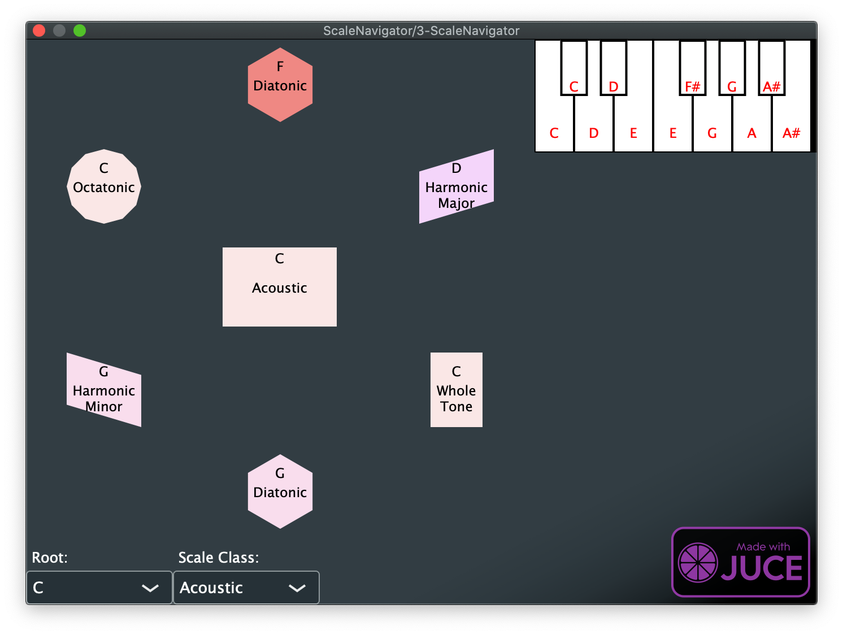
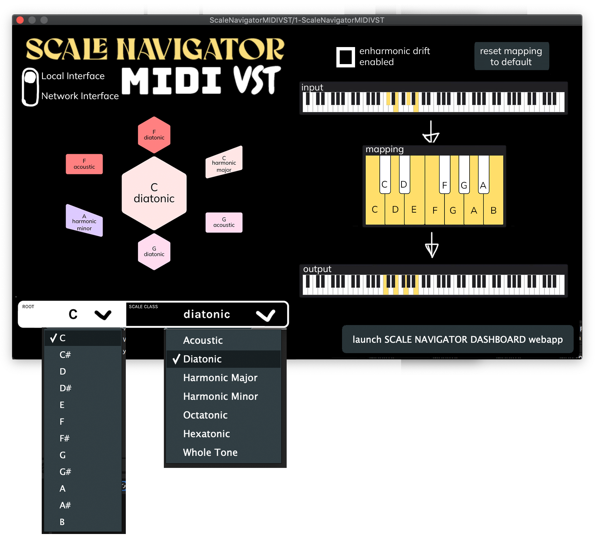
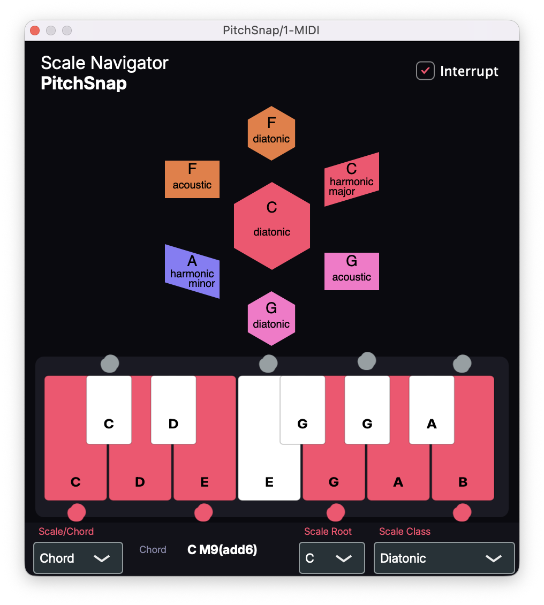
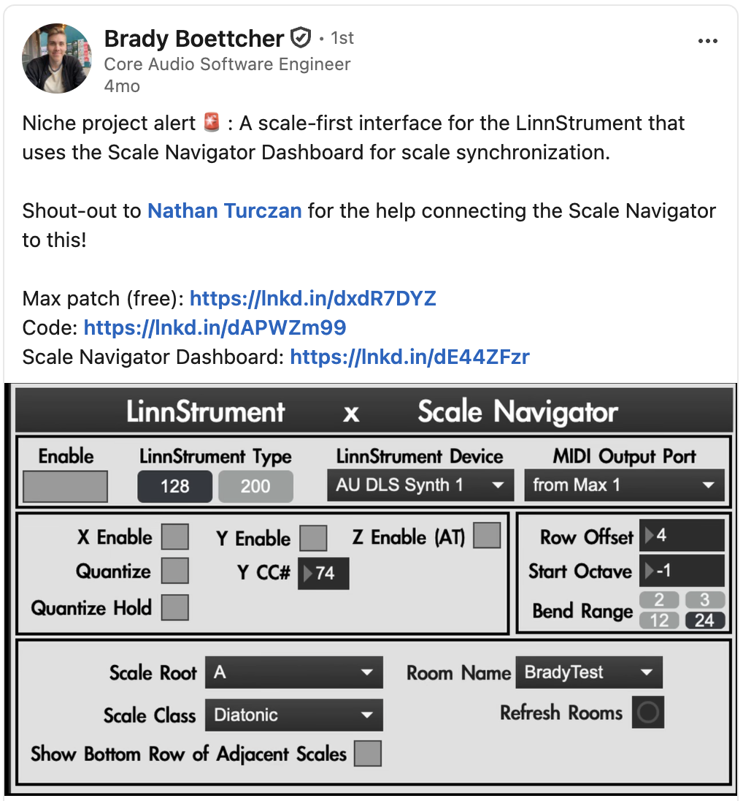

Role · Product, design, and the 2026 rebuild
With · Brady Boettcher (2021 C++/JUCE core)
Platforms · VST3 / AU (macOS, Windows) · Logic Pro, Ableton Live, any host · Max for Live
Tonalign maps the notes I play into a chosen scale or chord, even as that harmony changes. I want to be able to choose how that mapping works and see what it does while I'm playing.
Rebuilt in 2026: a keyboard that shows incoming and outgoing notes, four correction modes for different ways of playing, and synchronization with the Scale Navigator Dashboard.
Problem
I'm not a great pianist. I'm a terrible sight reader. My left hand is a liability and I don't have the muscle memory that I would like for chords and scales. It still doesn't change the fact that noodling on the piano is my favorite thing to do. One thing that I keep in mind as I play is the jazz saying that you're only ever a half step away from the right note. Tonalign is that saying made software: in Corrective mode, it gives notes outside the current harmony the smallest possible nudge to bring them into it.
Prototype
I've been wanting to build this plugin since forever. I took a JUCE and C++ class during my master's at CalArts and got what might as well have been a C+, so I needed help turning the idea into a working MIDI effect. In summer 2021, I posted on the JUCE forum looking for someone to work with through pair-programming sessions.
Developer Needed for MIDI effect VST - pair programming / lessons
I am working on a MIDI effect VST, but I have hit a wall. I think the best way forward is to contract an expert to help me push through, preferably in 1-on-1 pair programming sessions via zoom.
I was incredibly lucky to find Brady Boettcher, who was about to start his master's in music technology at McGill. My first email to him described my "kindergarten-level understanding of JUCE and C++," and by that afternoon he had the empty project building on his fork. We began working together in pair-programming video calls, a dozen or so hour-long sessions over the summer. We talked about building it as a Max for Live device and chose JUCE because it was cross-platform. Little did we know we'd run into Steinberg not really supporting MIDI-effect VST3s, but more on that later. I had the game plan and a to-do list per session, things like: load my scale dataset, draw the keyboard with where each key lands, filter the MIDI, port the navigator's polygons from my p5.js sketch, and let the DAW automate root and scale. Here's how I pitched the first session to him:
"Basically, I'd like to avoid MIDI processing for now and just spin up a decent jumping off point that will provide visual feedback. That way, when we start to conceive of design patterns for processing MIDI, we can use our eyes and not just our ears to see if what we've designed / implemented is working."
We were using the JUCE framework, Brady wrote the code and I merged each session's PR. Within a month we had a working MVP called Scale Navigator MIDI VST, and Brady and I have been friends since then.

The first playable build, July 2021.
Insight
Tonalign, or Scale Navigator MIDI VST as it was called at this early stage, was always meant to be a corrective tool, which meant that it needed the user to define the current harmonic context for it, so that it knew which notes were right or wrong based on that context. Ableton's Scale MIDI device was already there, but that device doesn't account for changing harmonic contexts, unless you want to start to get fancy with racks and macros, and even when you do that, there's no accounting for notes that are held across multiple changing contexts. And with a bunch of racked-up Scale devices, it's impossible to see how the notes are being corrected. A correction that doesn't inform you how or why it's happening feels like a bug, but a correction with an explanation is education!!!
The early build of Scale Navigator MIDI VST had a very simple way of showing how notes were corrected: the notes of the octave, laid out on a keyboard diagram, were each labelled with their sounding pitches, which could change depending on what scale was selected. So if the scale was B diatonic, the C key would be labelled as a C♯. That was good enough for an MVP, but it still didn't show what you were actually playing, or how it was being corrected. This is the design problem that we only just solved in spring 2026: how to draw the in/out difference on the plugin's much smaller UI in a way that's immediately apparent mid-performance.

The 2022 mockup: input, mapping, and output as three keyboards. Too much surface for a plugin window.

2026, my markup over the running plugin: gray dots above for what came in, red dots below for what came out. This led to the real design.
What shipped: the keys in the current scale are colored and the keys outside it are white. When you play, a gray marker appears above the key you pressed and a colored marker appears below the key that actually sounded. For a note that's in the scale, the two line up. For a note that got corrected, the bottom marker sits one key over, so you see the nudge as it happens.
Failure
Summer 2021 I also started chatting with Tristan Whitehill, who is the producer Euglossine (new album Qualia just dropped). I sent him the early version of Tonalign in August, and he tested it out on a 2015 MacBook Pro in Ableton and gave me some feedback.
Very lucky to get Tristan's thoughts on this, and he remains a music tech North Star!
Design decision
Scale Navigator MIDI VST shipped in January 2022 and then sat untouched in a drawer for four years. It was a part of my production workflow, but no one else used it.
The 2022 demo.
In 2026, the Scale Navigator Dashboard became a plugin that could set the harmony from inside the DAW. That gave me a reason to return to Tonalign: with synchronization between them, multiple instances could follow the same changing scales and chords, letting me reshape MIDI parts across the session from one place. I renamed the project PitchSnap, then Tonalign, and Brady, who was still a contributor on the repo, texted me: "I see some github issues popping up for scalenav 😉 What are you up to my man." And so we started bouncing ideas off each other. I'd been overhauling the UI (more compact, more fun colors, better visual feedback for note correction), but Brady had been mulling over how the scale network might map to the LinnStrument (the LinnStrument and some other grid controllers don't have black keys). It was in these conversations surrounding Brady's port of Scale Navigator to the LinnStrument that he mentioned the idea of a different model for correction: the stack. Rather than trying to maintain any semblance of piano keys sounding as close as possible to their corrected pitches, why not just stack the correct pitches from low to high on the piano keys? Or maybe just completely ignore the black keys and stack them on the white keys only, like a LinnStrument!
That port is a free Max patch Brady built and released in June 2026. It relights the LinnStrument's grid to whatever scale the Dashboard is on, so every lit cell is a note that fits, and it follows along as the scale changes. Here's how he announced it:

Brady's announcement. The Max patch and the code.
So the Correction dropdown now holds four answers to what should happen to a note that doesn't fit:
Corrective keeps your piano fingering intact, so a line you already know still works; Stack gives every key its own note, which is what you want on a grid, or when you're hunting for something you don't know yet.
The 2026 solution
The other big change that arrived in Tonalign in 2026 was chords, so that instead of scales being the only harmonic context we can map to, we can also think about smaller collections of pitches. And shared-memory sync with the Dashboard, so that Dashboard can serve as the session's conductor and control multiple instances of Tonalign on multiple tracks. Today Tonalign is not only a corrective tool but a composition layer, for testing out melodic, chordal, or textural ideas in different modes. The corrective side of it is still alive and well, though: sometimes I'll just mash my head against the keyboard, and I'm always surprised at how much more musical it sounds when filtered through Tonalign. My composition teacher Daniel Levin used to compare thematic transformation to the way a movie might take a main character and put them in different situations: Luke Skywalker wistful on Tatooine, frustrated and covered in mud on Dagobah, or wearing all black with his hand cut off screaming "NO!!" in Cloud City at the end of Empire. It's stuck with me because you really do want to retain the essence or character of a musical gesture while still giving it the flexibility to change and grow. Inflecting various notes according to different scalar / chordal contexts is a fun way to do that, and Tonalign makes it easy.
Outcome
At LA Laptop Orchestra's first show in August 2026, every Ableton user ran the Max for Live version of Tonalign. That version puts the Stack (White) mapping on a single track, so the ensemble used it without the plugin's two-track setup.
Recently I've discovered a new use for Tonalign that's a fun take on plunderphonics: finding recorded MIDI of great performances (the Chopin competition, Liszt, Paganini) and then filtering that MIDI through Tonalign to force it into whatever harmony I choose. Here's an example of that with Aphex Twin's "Avril 14th."
"Avril 14th" through Tonalign: each scale hands the theme a new affect.
As mentioned before, Steinberg makes a pure MIDI-effect plugin nearly impossible in VST3. So Tonalign is technically a synthesizer, with a silent synth running inside it so a MIDI tool is allowed to exist. This is really annoying. So I made a Max for Live version of it for LA Laptop Orchestra that makes routing so much easier. It doesn't have the same UI that Tonalign does (it runs Tonalign's Stack (White) mapping), but you only need one track. I designed it so that people don't have to use a MIDI controller. They can just use their computer keyboard. If you're in Ableton and just want it working, use the Max for Live device. If you need the four correction modes or the keyboard visualizer, use the plugin and budget for two tracks.
Setup in Ableton Live: the two-track routing. The same VST3/AU loads in Logic Pro or any host.
Brady Boettcher wrote the 2021 C++/JUCE core in a dozen or so pair sessions, and in 2026 suggested the Stack modes and beta-tested the builds. The plugin says "by Scale Navigator and Strange Loops": Strange Loops is Brady. And Tristan Whitehill for his feedback!
Scale Navigator Dashboard — the harmonic state that Tonalign subscribes to
Ensemble Jammer — the same harmonic state, followed by networked instruments instead of MIDI
NotesChordScales — the inverse direction: play notes, and the system infers the harmony
SNaPS — a sampler with the same harmony-aware pitch handling, applied to samples